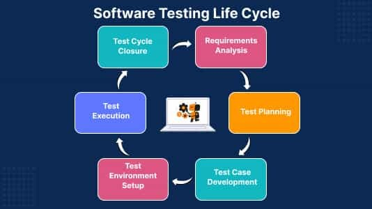

SDLC
Життєвий цикл тестування програмного забезпечення (STLC)
Життєвий цикл тестування програмного забезпечення (STLC) — це систематичний підхід до тестування
програмного
забезпечення, щоб переконатися, що воно відповідає вимогам і не містить дефектів. Це процес, який
включає серію кроків
або фаз, і кожна фаза має конкретні цілі та результати. STLC використовується для забезпечення високої
якості,
надійності програмного забезпечення та відповідності потребам кінцевих користувачів.
Основною метою STLC є виявлення та документування будь-яких дефектів або проблем у програмному додатку
якомога раніше в
процесі розробки. Це дозволяє розглядати та вирішувати проблеми до того, як програмне забезпечення буде
випущено для
громадськості.
Етапи STLC включають аналіз тесту, планування, проектування, налаштування тестового середовища,
виконання тесту,
закриття тестування та аналіз. Кожен із цих етапів включає певні дії та результати, які допомагають
забезпечити ретельне
тестування програмного забезпечення та відповідність вимогам кінцевих користувачів.
Загалом STLC є важливим процесом, який допомагає забезпечити якість програмного забезпечення та
забезпечує систематичний
підхід до тестування. Це дозволяє організаціям випускати високоякісне програмне забезпечення, яке
відповідає потребам
їхніх клієнтів, що в кінцевому підсумку призводить до задоволеності клієнтів і успіху бізнесу.
На початкових етапах STLC, поки розробляється програмний продукт або додаток, команда тестування
аналізує та визначає
область тестування, критерії входу та виходу, а також тестові випадки. Це допомагає скоротити час
випробувального циклу,
а також покращує якість продукції. Щойно фаза розробки завершиться, команда тестування готова з тестами
та починає
виконання. Це допомагає знаходити помилки на ранній стадії.
Етапи життєвого циклу тестування програмного забезпечення (STLC)
Аналіз вимог. Аналіз вимог є першим кроком життєвого циклу тестування програмного забезпечення (STLC). На цьому етапі команда із забезпечення якості розуміє вимоги, наприклад те, що має бути перевірено. Якщо чогось не вистачає або є незрозумілим, тоді команда із забезпечення якості зустрічається із зацікавленими сторонами, щоб краще зрозуміти детальні знання вимог.
Діяльність, яка виконується на етапі аналізу вимог, включає:
- Перегляд документа вимог до програмного забезпечення та інших пов’язаних документів.
- Опитування зацікавлених сторін для збору додаткової інформації.
- Виявлення будь-яких двозначностей або невідповідностей у вимогах.
- Виявлення будь-яких відсутніх або неповних вимог.
- Виявлення будь-яких потенційних ризиків або проблем, які можуть вплинути на процес тестування.
- Створення матриці відстеження вимог для відображення вимог у тестових випадках.
Наприкінці цього етапу команда тестування повинна мати чітке розуміння вимог до програмного забезпечення та виявити будь-які потенційні проблеми, які можуть вплинути на процес тестування. Це допоможе переконатися, що процес тестування зосереджено на найважливіших областях програмного забезпечення та що команда тестування зможе забезпечити високоякісні результати.
Планування тестування. Планування тестування – це найефективніша фаза життєвого циклу тестування програмного забезпечення, на якій визначаються всі плани тестування. На цьому етапі тестування команда розраховує передбачувані зусилля та вартість роботи з тестування.
Діяльність, яка виконується на етапі планування тесту, включає:
- Визначення цілей та обсягу тестування.
- Розробка стратегії тестування: вибір методів і технік тестування, які будуть використовуватися.
- Визначення середовища тестування та необхідних ресурсів.
- Визначення тестових випадків, які будуть виконані, і тестових даних, які використовуватимуться.
- Оцінка часу та витрат, необхідних для тестування.
- Визначення результатів тестування та етапів.
- Розподіл ролей і обов’язків між командою тестування.
- Розгляд та затвердження плану тестування.
Проектування. Починається після завершення етапу планування тестування. На цьому етапі команда тестування записує детальні тестові приклади. Команда тестування також готує необхідні тестові дані для тестування. Коли тестові приклади готуються, їх перевіряє команда із забезпечення якості.
Діяльність, яка виконується на етапі проектування, включає:
- Визначення тестів, які будуть розроблені.
- Написання тестів, які є ясними, лаконічними та легкими для розуміння.
- Створення тестових даних і тестових сценаріїв, які будуть використовуватися в тестових випадках.
- Визначення очікуваних результатів для кожного тесту.
- Перегляд і перевірка тестів.
- Оновлення матриці відстеження вимог для відображення вимог у тестових випадках.
Наприкінці цього етапу команда тестувальників повинна мати набір комплексних і точних тестових випадків, які забезпечують адекватне охоплення програмного забезпечення або програми. Це допоможе забезпечити ретельний процес тестування та виявлення й усунення будь-яких потенційних проблем до випуску програмного забезпечення.
Налаштування тестового середовища. Налаштування тестового середовища є важливою частиною STLC. По суті, середовище тестування визначає умови, за яких тестується програмне забезпечення. Це незалежна діяльність, і її можна розпочати разом із розробкою тестів. У цьому процесі команда тестування не бере участі. або розробник, або замовник створює середовище тестування.
Виконання тесту. Після розробки тестового прикладу та налаштування тестового середовища починається фаза виконання тесту. На цьому етапі команда тестування починає виконання тестів на основі підготовлених тестів на попередньому кроці.
Діяльність, яка виконується на етапі виконання тесту, включає:
- Виконання тесту: тестові випадки та сценарії, створені на етапі розробки тесту, запускаються в програмному забезпеченні для виявлення будь-яких дефектів або проблем.
- Реєстрація дефектів: будь-які дефекти або проблеми, виявлені під час виконання тесту, реєструються в системі відстеження дефектів разом із такими деталями, як серйозність, пріоритет і опис проблеми.
- Підготовка тестових даних: тестові дані готуються та завантажуються в систему для виконання тесту.
- Налаштування тестового середовища: необхідні апаратні, програмні та мережеві конфігурації налаштовані для виконання тесту.
- Виконання тесту: запускаються тестові випадки та сценарії, а результати збираються та аналізуються.
- Аналіз результатів тесту: результати виконання тесту аналізуються для визначення продуктивності програмного забезпечення та виявлення будь-яких дефектів або проблем.
- Повторне тестування дефектів: будь-які дефекти, виявлені під час виконання тесту, перевіряються повторно, щоб переконатися, що їх було правильно виправлено.
- Звіт про випробування: результати випробувань документуються та повідомляються відповідним зацікавленим сторонам.
Важливо зауважити, що виконання тесту є ітераційним процесом, і його, можливо, доведеться повторювати кілька разів, доки всі виявлені дефекти не будуть виправлені, а програмне забезпечення буде визнано придатним для випуску.
Закриття тестування та аналіз. Закриття тестування та аналіз — це завершальний етап життєвого
циклу тестування
програмного забезпечення (STLC), на якому завершуються та документуються всі дії, пов’язані з
тестуванням. Основна мета
етапу закриття тестування полягає в тому, щоб переконатися, що всі дії, пов’язані з тестуванням,
завершено та що
програмне забезпечення готове до випуску.
Наприкінці етапу закриття тестування команда тестувальників повинна мати чітке уявлення про якість і
надійність
програмного забезпечення, і будь-які дефекти або проблеми, які були виявлені під час тестування, повинні
бути усунені.
Етап закриття тесту також включає документування процесу тестування та будь-яких отриманих уроків, щоб
їх можна було
використати для покращення майбутніх процесів тестування.
Закриття тестування — це завершальний етап життєвого циклу тестування програмного забезпечення (STLC),
на якому
завершуються та документуються всі дії, пов’язані з тестуванням.
Метою завершення тестування є переконатися, що програмне забезпечення готове до випуску та що процес тестування було проведено організовано та ефективно.
Основні цілі життєвого циклу тестування програмного забезпечення (STLC)
STLC допомагає тестерам визначити пріоритети для того, які кроки необхідно виконати для тестування, і коли виконувати тестування. Кожна із зазначених нижче фаз має певні критерії входу та критерії виходу, і на основі цього команда тестування може вирішити, чи переходити до наступної фази життєвого циклу чи ні.
Фази життєвого циклу тестування програмного забезпечення (STLC):
- 1. Критерії вступу – це мінімальний набір умов, які слід враховувати перед початком тестування.
- Критерії виходу також є мінімальним набором умов, які необхідно виконати , щоб припинити тестування.
Роль STLC у процесі розроблення та тестування програмного забезпечення
Кожен цикл тестування має свою важливість і відіграє свою роль у загальній процедурі тестування.
Розуміння цих етапів
допоможе нам грамотно організувати тестування і досягти якісного ПЗ.
Раніше тестували додатки тільки наприкінці всього процесу розробки. Але такий підхід виявився
неефективним: виправлення
помилок на останньому етапі обходиться дорого. Щоб уникнути таких проблем, зараз перевірку програмного
забезпечення
проводять на кожному етапі розробки. Це дає змогу заздалегідь виявляти і виправляти проблеми, щоб у
кінцевому підсумку
отримати якісне ПЗ без додаткових витрат.
Давай розберемося докладніше, як STLC впливає на кожен етап розробки і тестування:
- Допомагає нам планувати й організовувати процес тестування. Ми визначаємо цілі, завдання та ресурси, необхідні для проведення тестування. Це допомагає нам уникнути хаосу і добре спланувати кожен крок.
- Допомагає нам аналізувати вимоги до програмного забезпечення. Ми ретельно вивчаємо вимоги і переконуємося, що всі вони зрозумілі та ясні. Якщо щось суперечливе, ми звертаємося до замовника або розробників, щоб прояснити ситуацію. Таким чином, STLC допомагає нам поліпшити комунікацію і запобігти помилкам, пов’язаним із неправильним розумінням вимог.
- STLC включає етап розробки тестових випадків. Ми розробляємо сценарії тестування, які дозволяють нам перевірити різні аспекти програмного забезпечення. Це допомагає нам виявити потенційні проблеми та дефекти.
STLC є невід’ємною частиною сучасної розробки ПЗ. Він допомагає команді розробки та тестування досягти високої якості продукту, ефективно керувати процесом тестування та покращити задоволеність користувачів. Правильне застосування STLC сприяє успішному завершенню проекту та досягненню поставлених цілей.